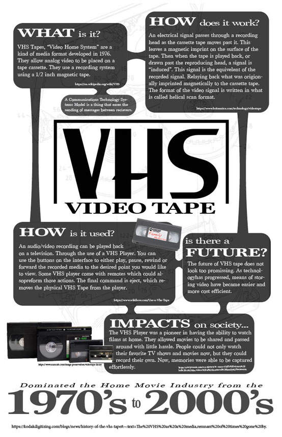

Infographic Project - AENG 110 |
|
| Home | Infographic Project | Video Project | Digital Photos | |
AENG 110 Infofraphic ProjectI went about making this infographic project by first assessing what the guidlines were and the task that needed to be completed. The requirements said to choose a communication technology and create a visual display the reveals the origin, operating principle, uses, impacts, and possible future of the selected technology. | |
|  |
VHS Video Tape Info GraphicTo go about making this Infographic I began by deciding what communication technology I wanted to research. I choose to do my infographic on VHS Video Tapes. To create my project I first sketched out what I wanted it to look like and the main layout. I then used Adobe InDesign to design my infographic digitally. The page size was to be set to 17" x 11". I wanted my design to be simple yet effective. I did not want it to be too overwhelming to look at for the veiwer. I decided that it would be a good idea to bold, and increase the size, of the words that the every section would be about. For example, I made "WHAT" in "WHAT is it" much larger and bolder that the "is it". I also decided to use the same line shape to connect all of the different boxes of information. Comunication Technology, was also defined using another seperate box with a connecting line. I included multiple pictures in my design. Vert subtly, there is a picture of the inside of a VHS Tape as the backround to make the page more interesting. I also included a photo that says "Family Memories" on the front of a VHS Tape in the "How is it used" section to visually show an example. I also included a picture of four different kinds of VHS Tapes to show that there are mulitipe different kinds and to break up all of the text. When the Infographic was all finished it was saved and exported as a PDF. |
| Home | Infographic Project | Video Project | Digital Photos | |
©2023 Chloe M. Enck | |